Visual Studio Code 技巧与窍门
通过本文中的技巧与窍门，快速上手并学习如何高效使用 Visual Studio Code。熟悉强大的编辑、代码智能和源代码管理功能，并了解实用的键盘快捷键。务必探索入门指南和用户指南中的其他深入主题以了解更多。
如果你刚刚开始使用，请务必查看 VS Code 教程，逐步了解关键功能。
如果你尚未安装 Visual Studio Code，请前往下载页面。你可以在在 Linux 上运行 VS Code、macOS和 Windows中找到特定平台的安装说明。
更喜欢视频？你可以观看 VS Code Day 演讲 Visual Studio Code 技巧与窍门或提升你的 VS Code 体验。
跟随实践教程，在 VS Code 中构建你的第一个 AI 应用。
在我们的介绍视频中了解 Visual Studio Code 的关键功能。
基础
入门
亲手探索 VS Code 的最佳方式是打开欢迎页面，然后选择一个演练，进行 VS Code 提供的设置步骤、功能和更深层次自定义的自导式浏览。在你发现和学习的过程中，演练会跟踪你的进度。
从帮助 > 欢迎菜单打开欢迎页面，或从命令面板使用 帮助: 欢迎 命令 (kb(workbench.action.showCommands))。
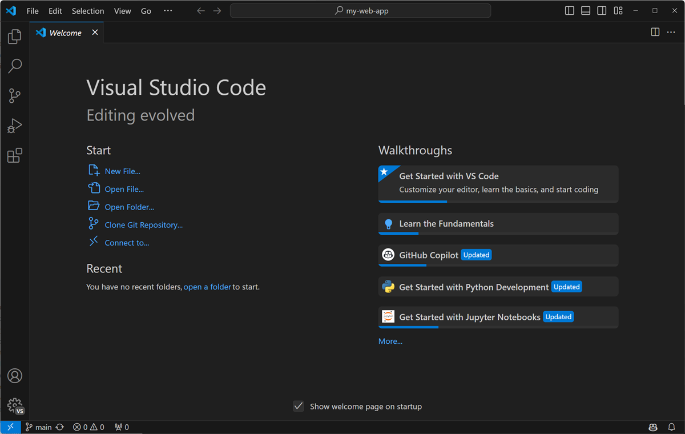
扩展也可以提供演练。你还可以使用帮助: 打开演练... 命令从命令面板 (kb(workbench.action.showCommands)) 直接打开演练。
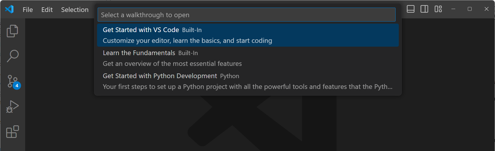
如果你想提升代码编辑技能，打开交互式编辑器演练场。试用 VS Code 的代码编辑功能，如多光标编辑、IntelliSense、代码片段、Emmet 等。
从帮助 > 编辑器演练场菜单打开欢迎页面，或使用帮助: 交互式编辑器演练场命令从命令面板 (kb(workbench.action.showCommands))。
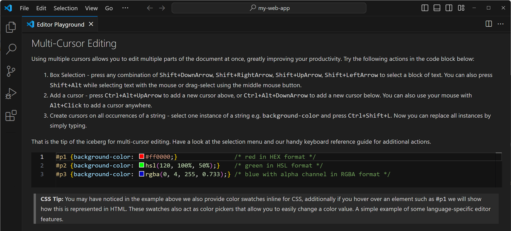
命令面板
根据当前上下文访问所有可用命令。
键盘快捷键: kb(workbench.action.showCommands)
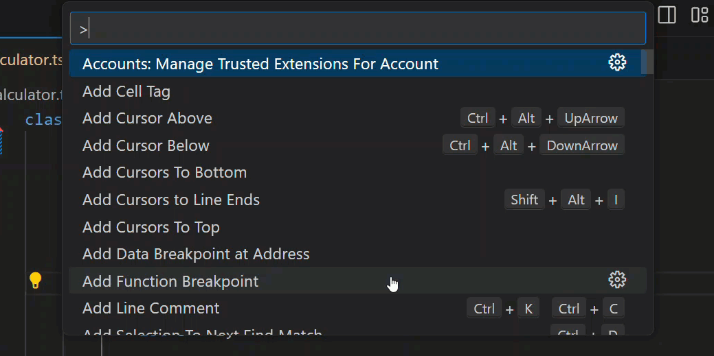
[!TIP]
你可以通过用鼠标光标抓住上边缘并将其拖动到其他位置来移动命令面板。你也可以选择标题栏中的自定义布局控件，然后选择一个预配置的快速输入位置。

默认键盘快捷键
命令面板中的许多命令都有与之关联的默认键盘快捷键。你可以在命令面板 (kb(workbench.action.showCommands)) 中查看与命令并列的默认键盘快捷键。
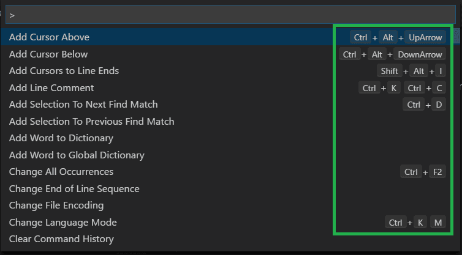
键盘参考表
下载你平台的键盘快捷键参考表 (macOS, Windows, Linux)。
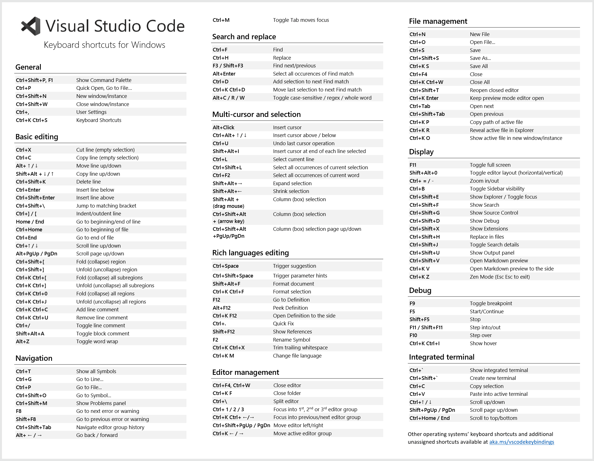
浮动窗口
你可以在浮动窗口中打开编辑器、终端或特定视图，例如将编辑器移动到显示器上的其他位置，甚至移动到其他显示器。
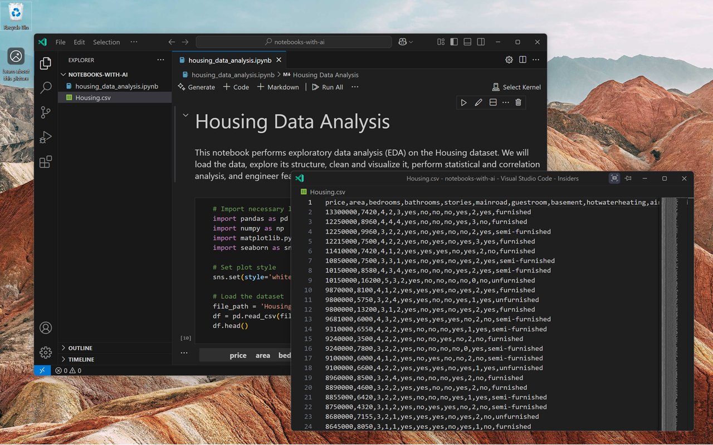
将编辑器选项卡拖出当前 VS Code 窗口即可在浮动窗口中打开它。或者，使用编辑器选项卡上下文菜单中的移动到新窗口或复制到新窗口选项。
集成终端
键盘快捷键: kb(workbench.action.terminal.toggleTerminal)
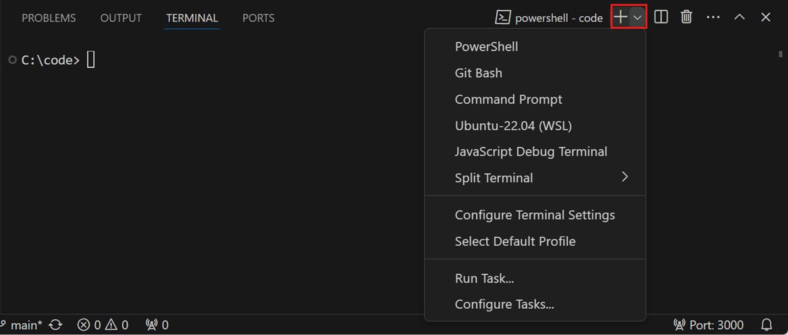
你可以从下拉菜单中选择另一个终端 shell。根据你的操作系统和系统配置，你可能会看到列出不同的 shell。
延伸阅读:
- 集成终端 文档
- 掌握 VS Code 终端文章
切换侧边栏
键盘快捷键: kb(workbench.action.toggleSidebarVisibility)
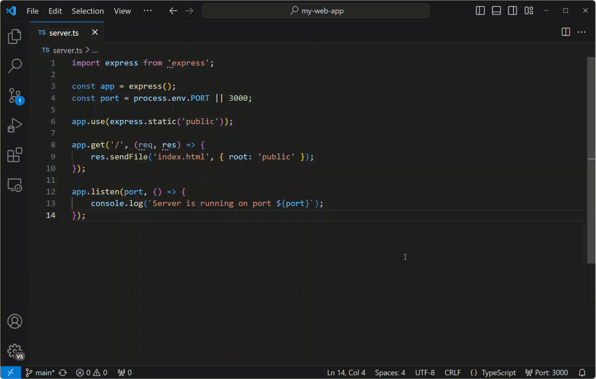
切换面板
键盘快捷键: kb(workbench.action.togglePanel)
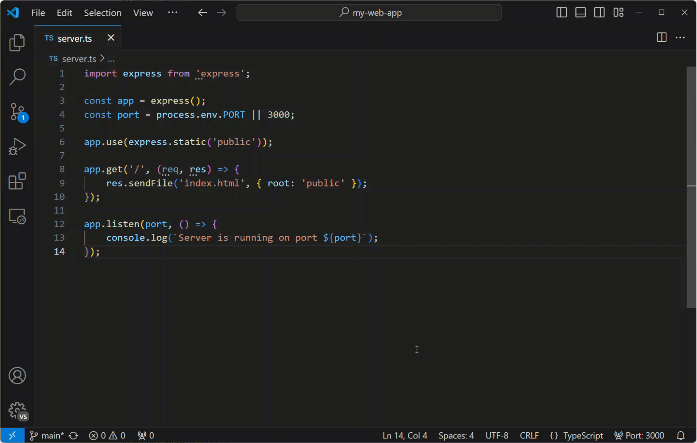
禅模式
进入无干扰的禅模式。
键盘快捷键: kb(workbench.action.toggleZenMode)
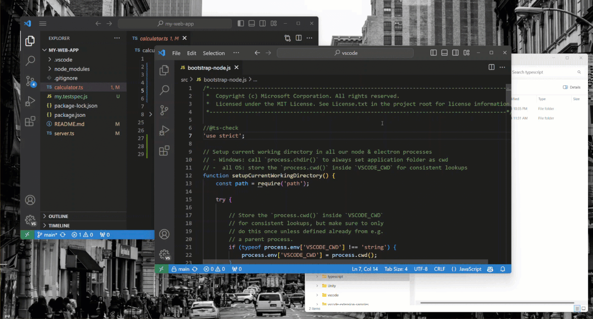
按 kbstyle(Esc) 两次退出禅模式。
命令行
VS Code 拥有强大的命令行界面 (CLI)，可让你自定义编辑器的启动方式以支持各种场景。例如，你可以从命令行启动 VS Code 来打开比较两个文件的差异编辑器。
确保 VS Code 二进制文件在你的路径中，以便你可以直接输入 'code' 来启动 VS Code。如果 VS Code 在安装过程中已添加到你的环境路径中，请参阅特定平台的设置主题（在 Linux 上运行 VS Code、macOS、Windows）。
# 打开当前目录中的 code
code .
# 在最近使用过的 code 窗口中打开当前目录
code -r .
# 创建新窗口
code -n
# 更改语言
code --locale=es
# 打开差异编辑器
code --diff <file1> <file2>
# 打开文件到指定行和列 <file:line[:character]>
code --goto package.json:10:5
# 查看帮助选项
code --help
# 禁用所有扩展
code --disable-extensions ..vscode 文件夹
工作区特定的配置文件位于工作区根目录下的 .vscode 文件夹中。例如，用于任务运行器的 tasks.json 和用于调试器的 launch.json。
状态栏
错误和警告
键盘快捷键: kb(workbench.actions.view.problems)
快速跳转到项目中的错误和警告。
使用 kb(editor.action.marker.nextInFiles) 或 kb(editor.action.marker.prevInFiles) 在错误之间循环切换
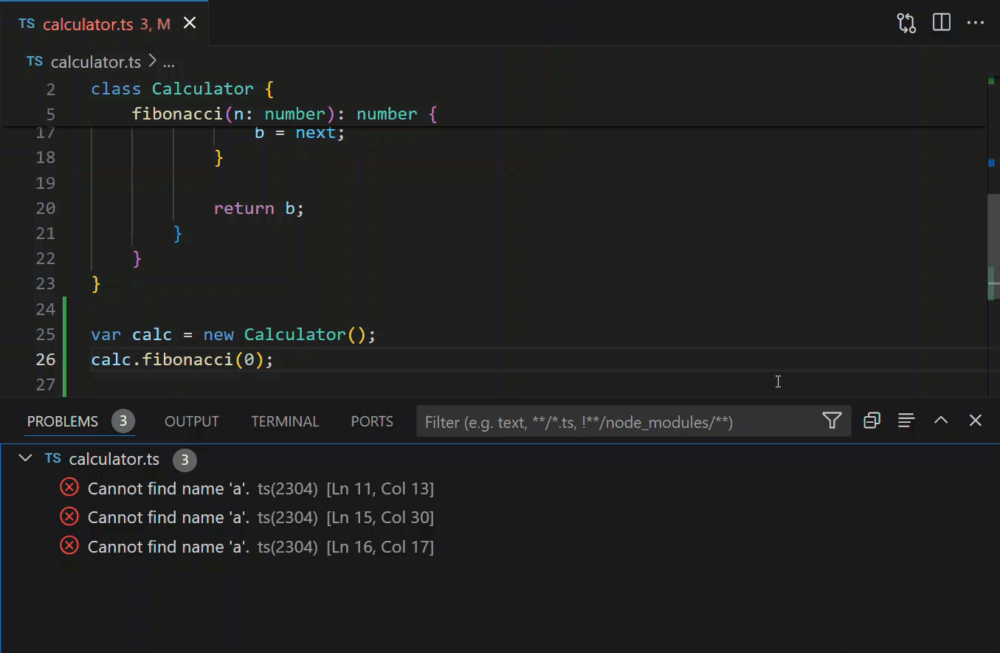
你可以按类型（'info'、'errors'、'warnings'）或按匹配文本来过滤问题列表。
更改语言模式
状态栏中的语言模式指示与当前活动编辑器关联的语言（例如 Markdown、Python 等）。你可以通过选择状态栏中的语言模式指示器，或使用键盘快捷键来更改当前编辑器的语言模式。
键盘快捷键: kb(workbench.action.editor.changeLanguageMode)
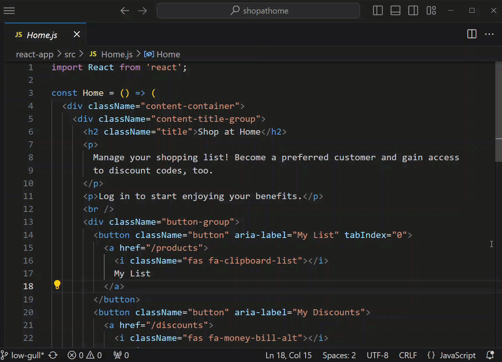
如果你想为某种文件类型持久化新的语言模式，请使用配置文件关联命令将当前文件扩展名与已安装的语言关联起来。
自定义
有许多选项可以自定义 VS Code 以满足你的偏好:
- 更改你的主题
- 更改你的键盘快捷键
- 调整你的设置
- 添加 JSON 验证
- 创建代码片段
- 安装扩展
更改你的主题
VS Code 内置了多种颜色主题。使用首选项: 颜色主题命令或使用键盘快捷键。
键盘快捷键: kb(workbench.action.selectTheme)
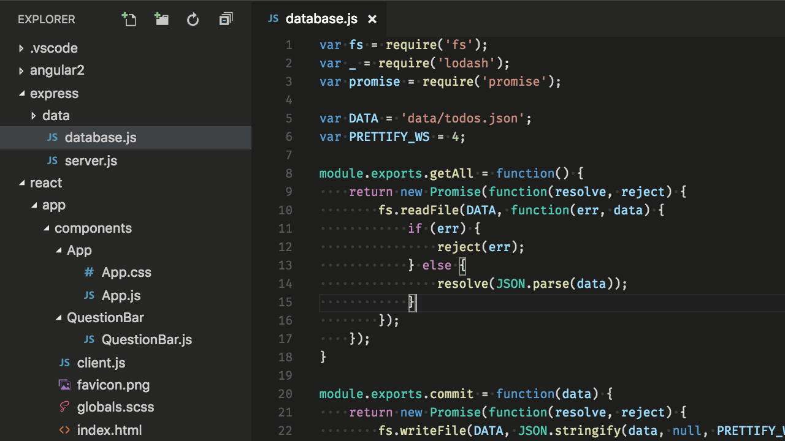
你可以从 VS Code 扩展市场安装更多主题。选择首选项: 颜色主题 > + 浏览其他颜色主题... 命令来从市场搜索主题。
此外，你还可以安装和更改文件图标主题。
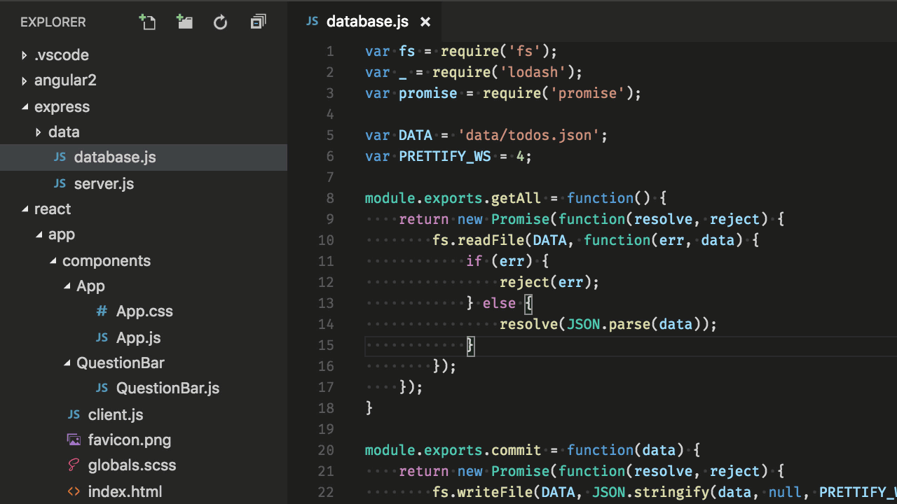
键映射
你是否习惯了其他编辑器的键盘快捷键？你可以安装键映射扩展，将你喜欢的编辑器的键盘快捷键带入 VS Code。使用首选项: 键映射命令查看 Visual Studio Marketplace 上的当前列表。
一些比较流行的键映射有:
你可以在键盘快捷键编辑器中查看和自定义键盘快捷键。使用首选项: 打开键盘快捷键命令或使用快捷键打开编辑器。
键盘快捷键: kb(workbench.action.openGlobalKeybindings)
选择铅笔图标或在特定条目上使用 kbstyle(Enter) 来编辑键盘快捷键。使用搜索字段过滤列表。
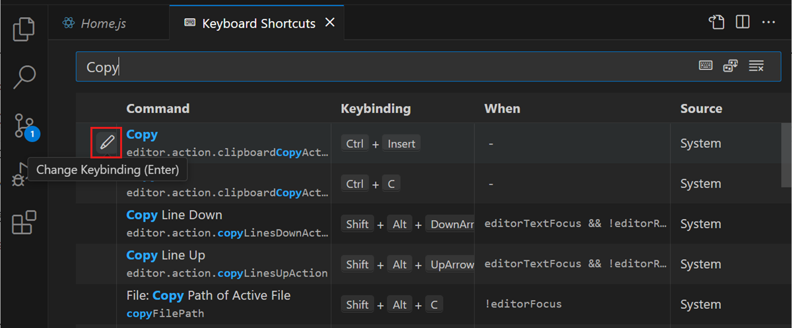
你还可以搜索快捷键，并在 keybindings.json 文件中添加自己的键盘快捷键。
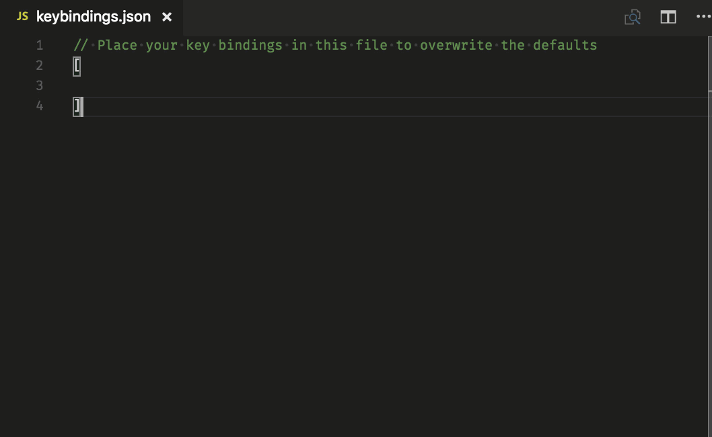
在 Visual Studio Code 键绑定中查看更多信息。
调整你的设置
默认情况下，VS Code 显示设置编辑器来查看和编辑设置。你也可以使用打开用户设置 (JSON) 命令或通过 setting(workbench.settings.editor) 设置更改默认设置编辑器来编辑底层的 settings.json 文件。
打开用户设置 settings.json
键盘快捷键: kb(workbench.action.openSettings)
更改各种 UI 元素的字体大小
// 主编辑器
"editor.fontSize": 18,
// 终端面板
"terminal.integrated.fontSize": 14,
// 输出面板
"[Log]": {
"editor.fontSize": 15
}更改缩放级别
"window.zoomLevel": 5字体连字
"editor.fontFamily": "Fira Code",
"editor.fontLigatures": true提示: 你需要安装支持字体连字的字体。FiraCode 是 VS Code 团队中很受欢迎的字体。
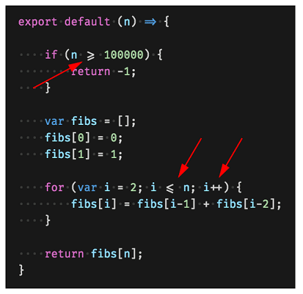
自动保存
"files.autoSave": "afterDelay"你也可以通过顶级菜单的文件 > 自动保存来切换自动保存。
保存时格式化
"editor.formatOnSave": true粘贴时格式化
"editor.formatOnPaste": true更改 Tab 字符的大小
"editor.tabSize": 4空格或制表符
"editor.insertSpaces": true渲染空白字符
"editor.renderWhitespace": "all"空白字符默认在文本选择中渲染。
忽略文件 / 文件夹
将这些文件 / 文件夹从编辑器窗口中移除。
"files.exclude": {
"somefolder/": true,
"somefile": true
}将这些文件 / 文件夹从搜索结果中移除。
"search.exclude": {
"someFolder/": true,
"somefile": true
}了解其他自定义选项。
语言特定设置
你可以通过使用语言标识符为特定语言限定设置范围。你可以在语言标识符参考中找到常用语言 ID 的列表。
"[languageid]": {
}提示: 你还可以使用配置语言特定设置命令创建语言特定的设置。
>
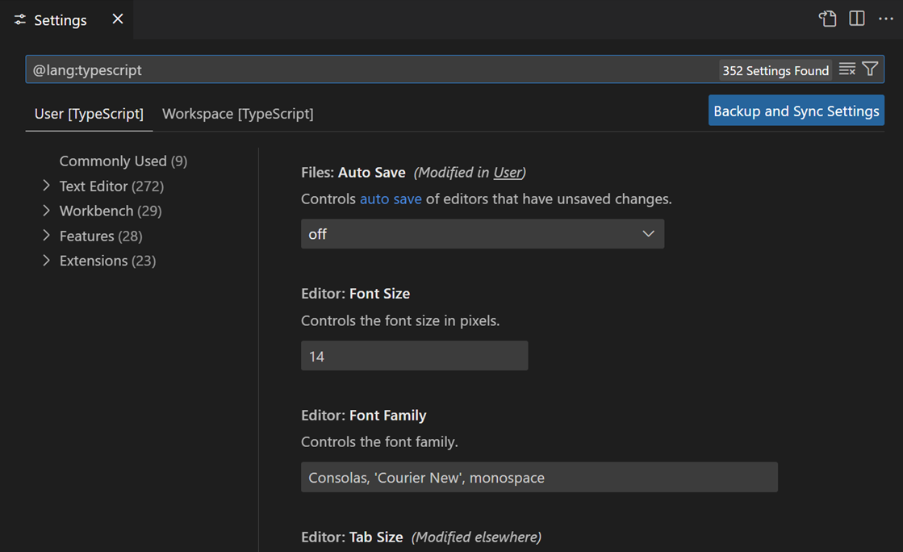
添加 JSON 验证
默认情况下，许多文件类型已启用 JSON 验证。在 settings.json 中创建你自己的架构和验证:
"json.schemas": [
{
"fileMatch": [
"bower.json"
],
"url": "https://json.schemastore.org/bower"
}
]或者用于工作区中定义的架构:
"json.schemas": [
{
"fileMatch": [
"**/foo.json"
],
"url": "./myschema.json"
}
]或者使用自定义架构:
"json.schemas": [
{
"fileMatch": [
"/.myconfig"
],
"schema": {
"type": "object",
"properties": {
"name" : {
"type": "string",
"description": "条目的名称"
}
}
}
}
]在 JSON 文档中查看更多信息。
配置默认浏览器
在 VS Code 中，你可以对链接使用 kbstyle(Ctrl+click)（macOS 上为 kbstyle(Cmd+click)）在默认浏览器中打开它。你可以通过设置 setting(workbench.externalBrowser) 设置 来配置默认浏览器。
将浏览器可执行文件的完整路径指定为设置值。或者，为了确保在不同设备上的正常运行，你也可以使用浏览器别名，如 edge、chrome 或 firefox。
"workbench.externalBrowser": "edge"将多个日志合并到单个视图中
输出面板显示各种服务的输出。每个服务通常有自己的日志。要分析多个服务的相关日志信息，你可以将多个日志合并到单个_复合日志_中。
从输出面板的溢出菜单中选择创建复合日志...。
扩展
键盘快捷键: kb(workbench.view.extensions)
查找扩展
你可以使用多种来源查找扩展:
- 在 VS Code 市场中。
- 在 VS Code 的扩展视图中搜索。
- 查看扩展推荐
- 社区精选的扩展列表，如 awesome-vscode。
查找热门扩展
在扩展视图中，选择筛选控件，然后选择最热门或排序依据 > 安装计数。
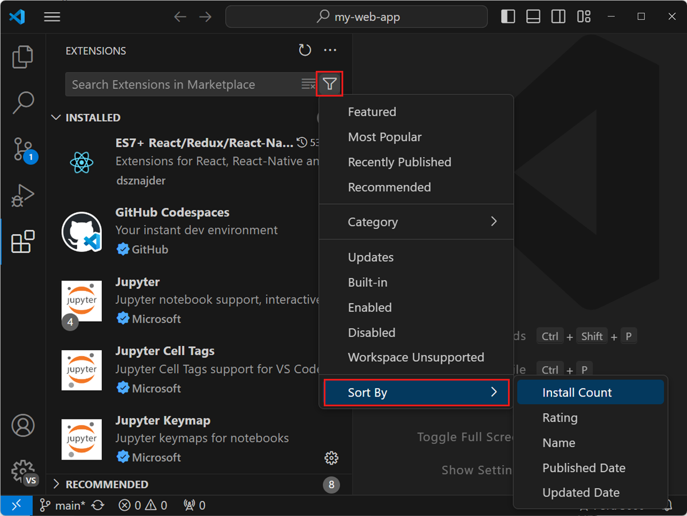
扩展推荐
在扩展视图中，选择筛选控件，然后选择推荐以查看推荐的扩展列表。
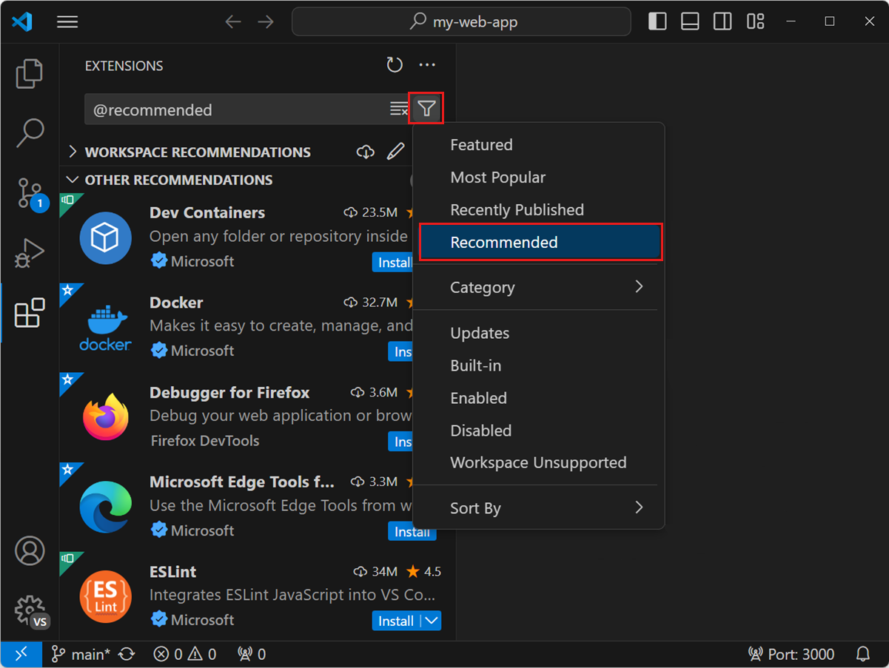
创建你自己的扩展
你有兴趣创建自己的扩展吗？你可以在扩展 API 文档中学习如何操作，特别是查看关于贡献点的文档。
- 配置
- 命令
- 键盘快捷键
- 语言
- 调试器
- 语法
- 主题
- 代码片段
- jsonValidation
文件和文件夹
简单文件对话框
通过简单文件对话框，你可以用 VS Code 内的更简单的快速选择对话框替换操作系统默认的用于打开和保存文件和文件夹的文件对话框。
设置: setting(files.simpleDialog)
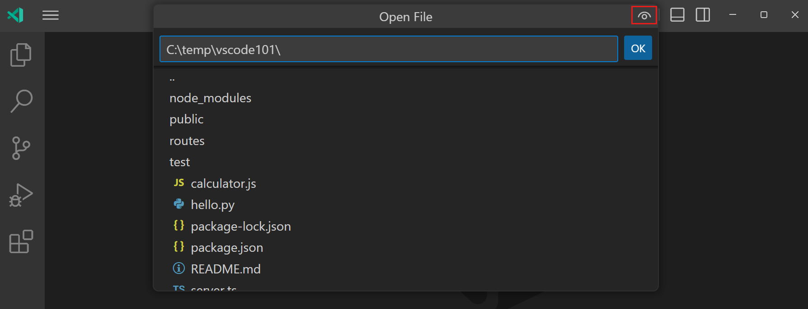
[!TIP]
使用右上角的眼睛图标来显示或隐藏以点开头的文件和文件夹。
当你打开文件夹并输入不存在的路径时，简单文件对话框会提示你创建该文件夹。
显示资源管理器视图
键盘快捷键: kb(workbench.view.explorer)
快速打开
快速搜索和打开文件。
键盘快捷键: kb(workbench.action.quickOpen)
提示: 输入 kbstyle(?) 来查看命令建议。
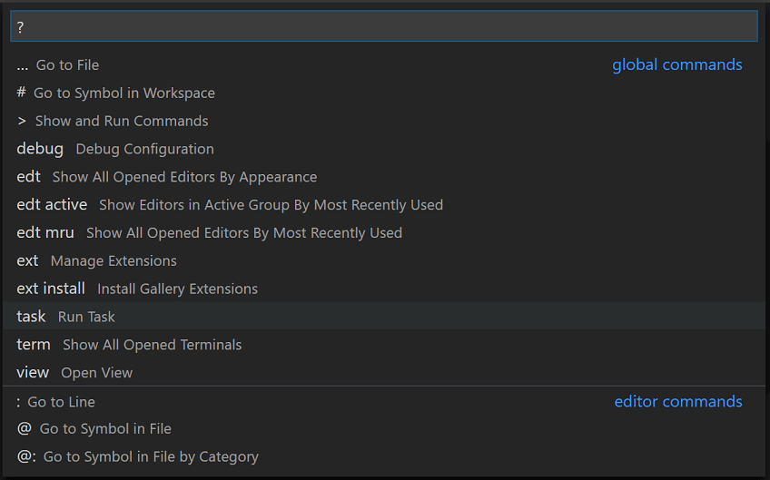
输入如 edt 或 term 等命令后跟空格，会弹出一个下拉列表。
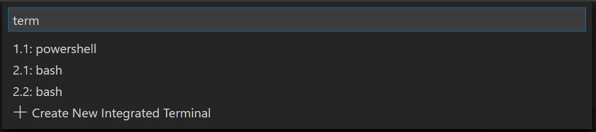
在最近打开的文件之间导航
重复按快速打开键盘快捷键可在最近打开的文件之间快速循环切换。
从快速打开中打开多个文件
你可以通过按 kbstyle(Right Arrow) 从快速打开中打开多个文件。这会在后台打开当前选中的文件，你可以继续从快速打开中选择文件。
在最近打开的文件夹和工作区之间导航
打开最近使用的文件夹或工作区。
键盘快捷键: kb(workbench.action.openRecent)
显示一个快速选择下拉列表，其中包含文件 > 打开最近中的列表，依次为最近打开的文件夹、工作区和文件。
从链接创建或打开文件
键盘快捷键: kbstyle(Ctrl+click)（macOS 上为 kbstyle(Cmd+click)）
你可以通过将光标移动到文件链接上并按 kbstyle(Ctrl+click) 来快速打开文件或图像，或创建新文件。
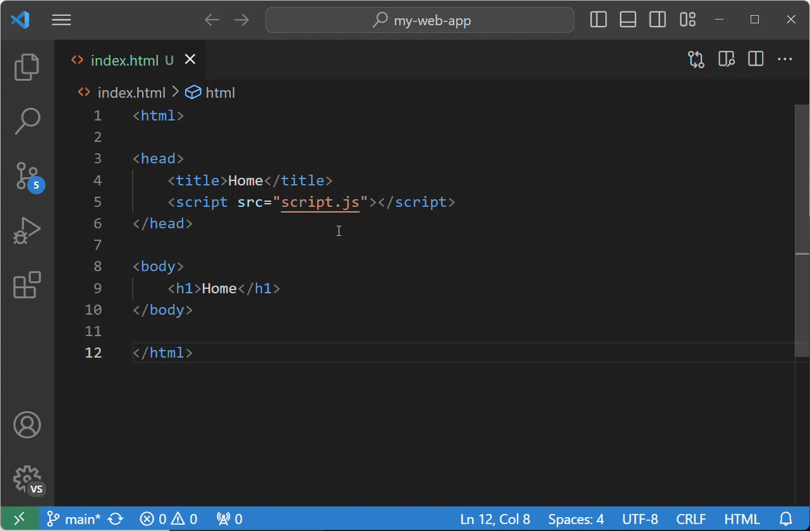
关闭当前打开的文件夹
键盘快捷键: kb(workbench.action.closeFolder)
导航历史记录
浏览完整历史记录: kb(workbench.action.quickOpenPreviousRecentlyUsedEditorInGroup)
向后导航: kb(workbench.action.navigateBack)
向前导航: kb(workbench.action.navigateForward)
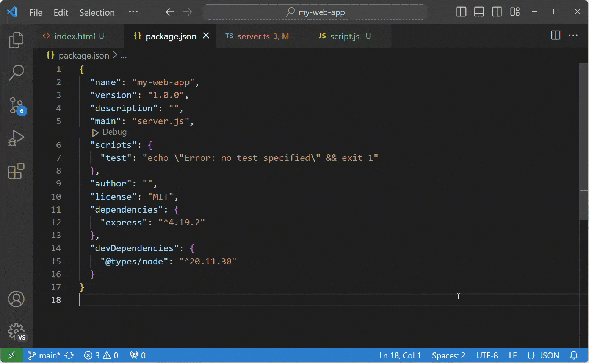
文件关联
为未正确检测到的文件创建语言关联。例如，许多带有自定义文件扩展名的配置文件实际上就是 JSON。
"files.associations": {
".database": "json"
}防止脏写
当你尝试保存由于磁盘上的文件已更改而无法保存的文件时，VS Code 会显示错误消息。VS Code 阻止保存文件，以防止覆盖在编辑器外部所做的更改。
要解决保存冲突，请选择通知弹窗中的比较操作，打开一个差异编辑器，向你显示磁盘上的文件内容（左侧）与 VS Code 中的内容（右侧）的对比:
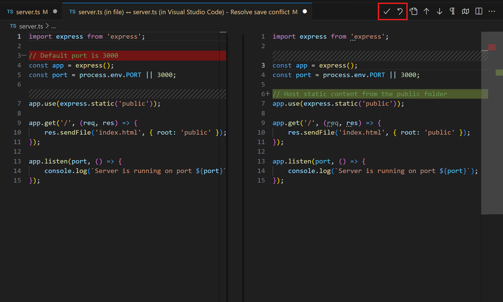
使用编辑器工具栏中的操作来解决保存冲突。你可以接受你的更改从而覆盖磁盘上的任何更改，或者还原为磁盘上的版本。还原意味着你的更改将会丢失。
注意: 在你选择两个操作之一来解决冲突之前，文件将保持脏状态且无法保存。
编辑技巧
以下是一些常用的代码编辑功能选择。如果你更熟悉其他编辑器的键盘快捷键，可以考虑安装键映射扩展。
提示: 你可以在扩展视图中通过将搜索过滤为 @recommended:keymaps 来查看推荐的键映射扩展。
并排编辑
键盘快捷键: kb(workbench.action.splitEditor)
你还可以拖放编辑器来创建新的编辑器组，并在组之间移动编辑器。
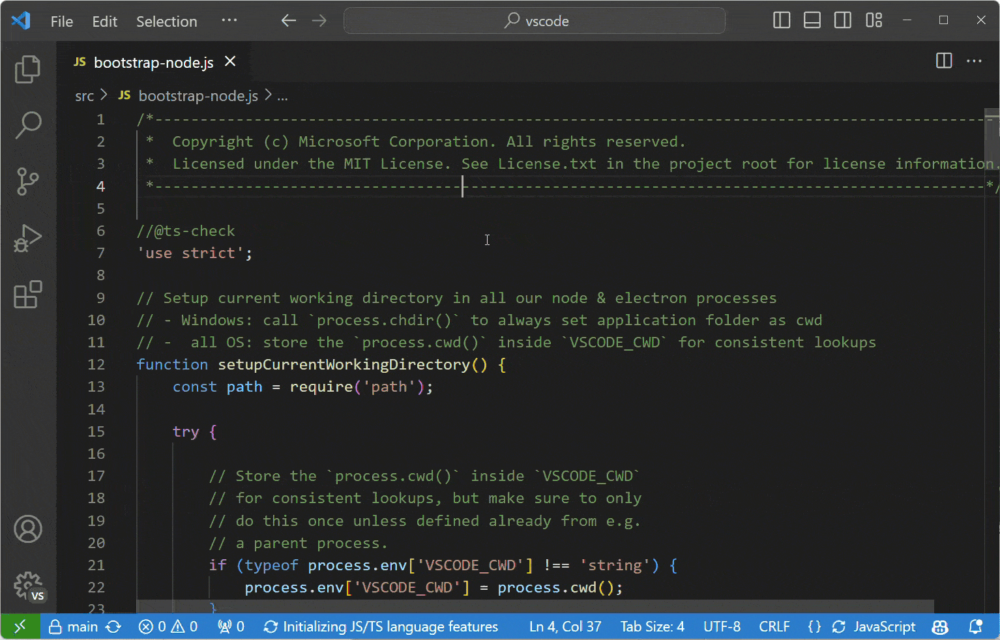
在编辑器之间切换
键盘快捷键: kb(workbench.action.focusFirstEditorGroup), kb(workbench.action.focusSecondEditorGroup), kb(workbench.action.focusThirdEditorGroup)
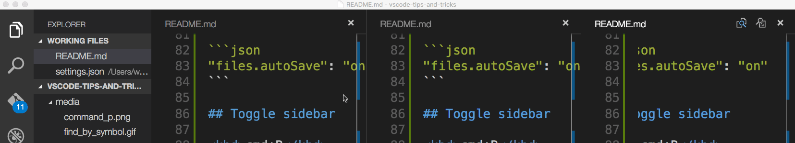
多光标选择
要在任意位置添加光标，用鼠标选择一个位置并使用 kbstyle(Alt+Click)（macOS 上为 kbstyle(Option+Click)）。
要在当前位置上方或下方设置光标，请使用:
键盘快捷键: kb(editor.action.insertCursorAbove) 或 kb(editor.action.insertCursorBelow)

你可以使用 kb(editor.action.selectHighlights) 在当前选区的所有匹配项上添加额外的光标。
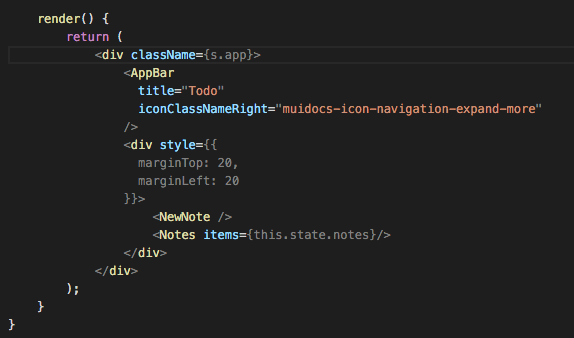
注意: 你还可以通过setting(editor.multiCursorModifier)设置 将修饰键更改为kbstyle(Ctrl/Cmd)来应用多个光标。有关详细信息，请参阅多光标修饰键。
如果你不想添加当前选区的所有匹配项，可以使用 kb(editor.action.addSelectionToNextFindMatch)。
它只选择当前已选中项之后的下一个匹配项，这样你可以逐个添加选区。
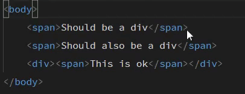
列（框）选择
你可以通过按住 kbstyle(Shift+Alt)（macOS 上为 kbstyle(Shift+Option)）同时拖动鼠标来选择文本块。每个选中的行尾都会添加一个独立的光标。
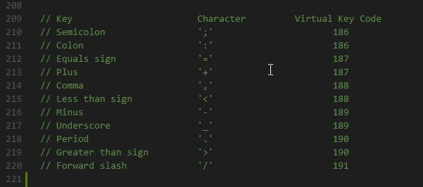
你也可以使用键盘快捷键来触发列选择。
垂直标尺
你可以使用 setting(editor.rulers) 设置在编辑器中添加垂直列标尺，该设置接受一个列字符位置数组，指定你希望显示垂直标尺的位置。
{
"editor.rulers": [
20, 40, 60
]
}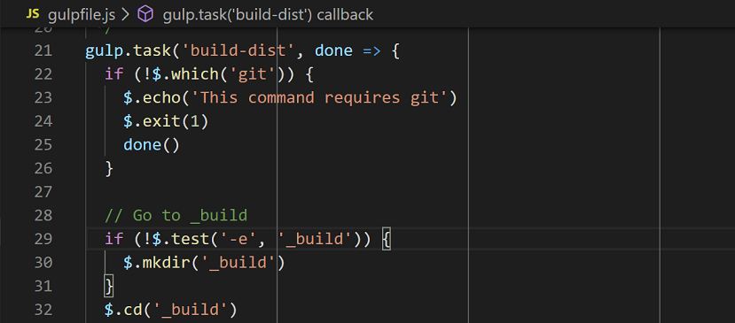
快速滚动
按住 kbstyle(Alt) 键可以在编辑器和资源管理器中启用快速滚动。默认情况下，快速滚动使用 5 倍速度乘数，但你可以通过编辑器: 快速滚动灵敏度（setting(editor.fastScrollSensitivity)）设置来控制乘数。
锁定滚动
你可以使用视图: 切换锁定滚动跨编辑器命令在所有可见编辑器中同步滚动。这意味着当你在一个编辑器中滚动时，所有其他编辑器也会滚动相同的量，保持所有内容对齐。
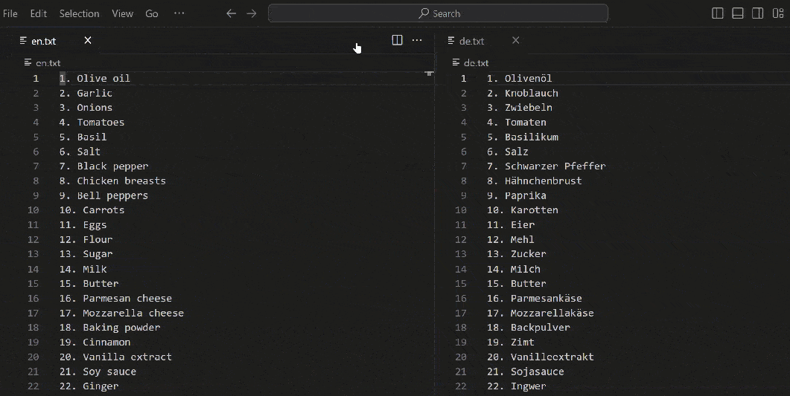
你可以选择仅在按住特定键盘快捷键时激活滚动同步。为 workbench.action.holdLockedScrolling 命令设置键盘快捷键，以临时锁定跨编辑器的滚动。
向上 / 向下复制行
键盘快捷键: kb(editor.action.copyLinesUpAction) 或 kb(editor.action.copyLinesDownAction)
复制行向上/向下命令在 Linux 上未绑定，因为 VS Code 默认键盘快捷键会与 Ubuntu 键盘快捷键冲突，参见 Issue #509。你仍然可以将editor.action.copyLinesUpAction和editor.action.copyLinesDownAction命令设置为你自己喜好的键盘快捷键。
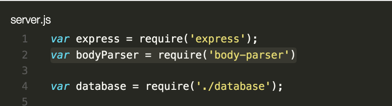
向上和向下移动行
键盘快捷键: kb(editor.action.moveLinesUpAction) 或 kb(editor.action.moveLinesDownAction)
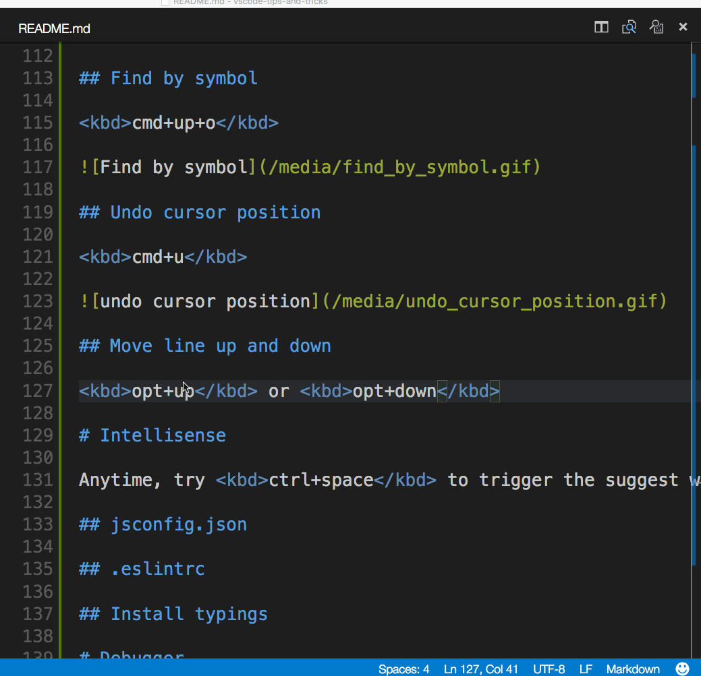
缩小 / 扩展选区
键盘快捷键: kb(editor.action.smartSelect.shrink) 或 kb(editor.action.smartSelect.expand)
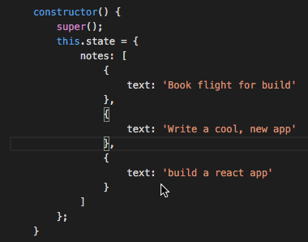
你可以在基本编辑文档中了解更多。
转到文件中的符号
键盘快捷键: kb(workbench.action.gotoSymbol)
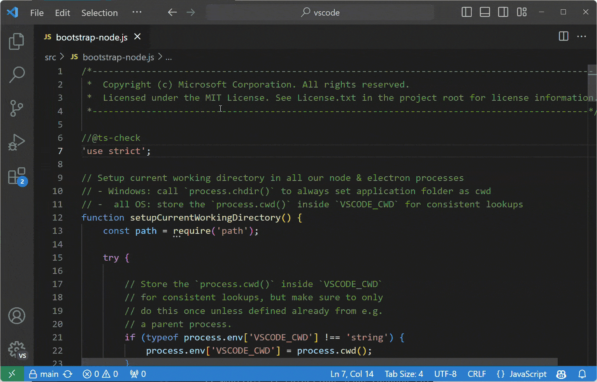
你可以通过添加冒号 @: 来按种类对符号进行分组。
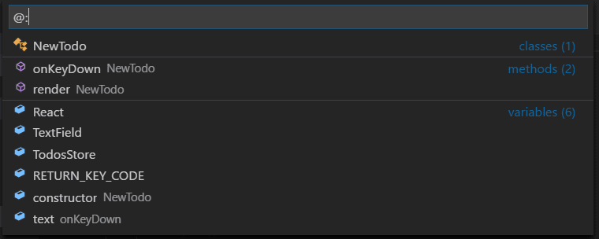
转到工作区中的符号
键盘快捷键: kb(workbench.action.showAllSymbols)
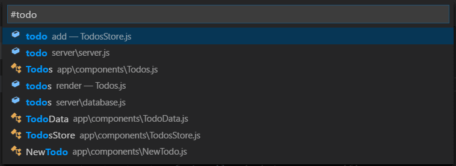
大纲视图
文件资源管理器中的大纲视图（默认在底部折叠）显示当前打开文件的符号。
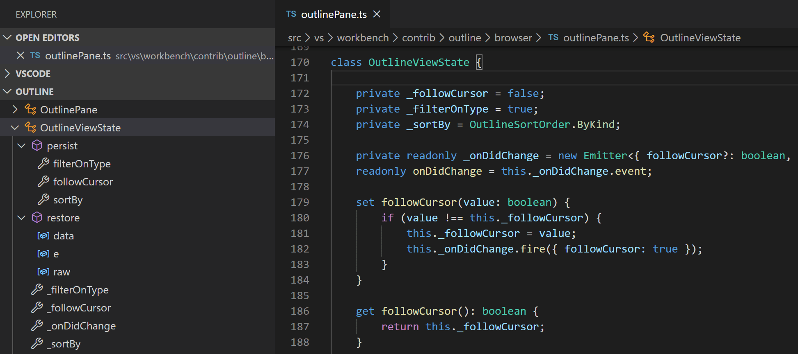
你可以按符号名称、类别和文件中的位置进行排序，从而快速导航到符号位置。
导航到特定行
键盘快捷键: kb(workbench.action.gotoLine)
撤销光标位置
键盘快捷键: kb(cursorUndo)
裁剪尾随空白
键盘快捷键: kb(editor.action.trimTrailingWhitespace)
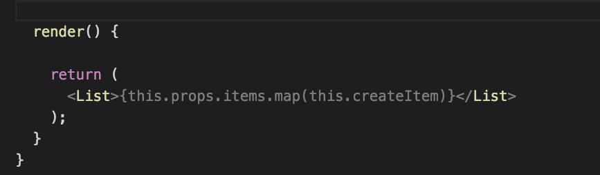
转换文本命令
你可以使用命令面板中的转换命令将选定文本更改为大写、小写和首字母大写。
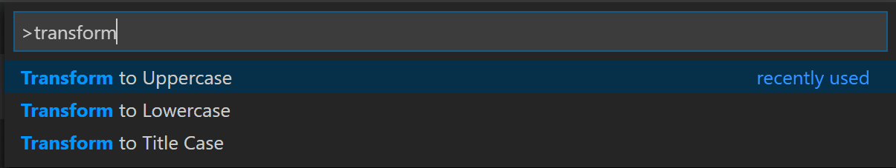
代码格式化
当前选中的源代码: kb(editor.action.formatSelection)
整个文档格式化: kb(editor.action.formatDocument)
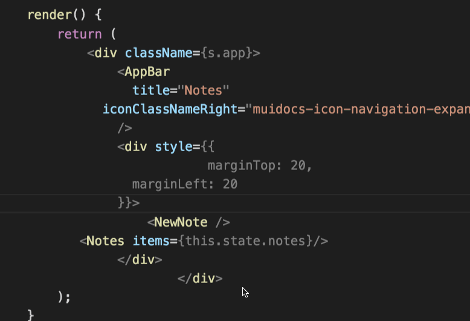
代码折叠
键盘快捷键: kb(editor.fold), kb(editor.unfold) 和 kb(editor.toggleFold)
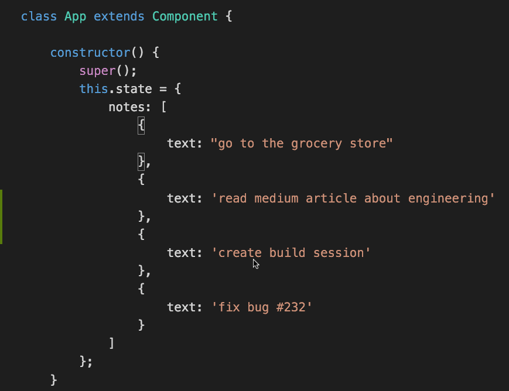
你还可以使用全部折叠（kb(editor.foldAll)）和全部展开（kb(editor.unfoldAll)）来折叠/展开编辑器中的所有区域。
你可以使用折叠所有块注释（kb(editor.foldAllBlockComments)）折叠所有块注释。
选择当前行
键盘快捷键: kb(expandLineSelection)
导航到文件的开头和结尾
键盘快捷键: kb(cursorTop) 和 kb(cursorBottom)
打开 Markdown 预览
在 Markdown 文件中，使用
键盘快捷键: kb(markdown.togglePreview)
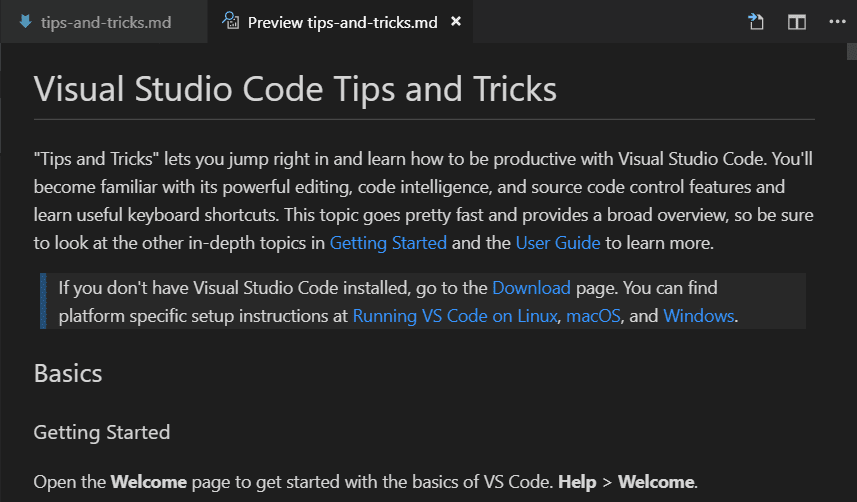
并排 Markdown 编辑和预览
在 Markdown 文件中，使用
键盘快捷键: kb(markdown.showPreviewToSide)
预览和编辑器将随你在任一视图中的滚动而同步。
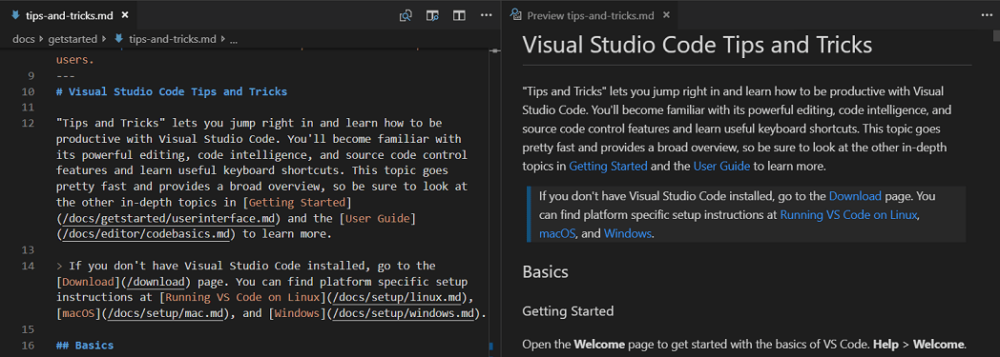
IntelliSense
kb(editor.action.triggerSuggest) 触发建议小组件。
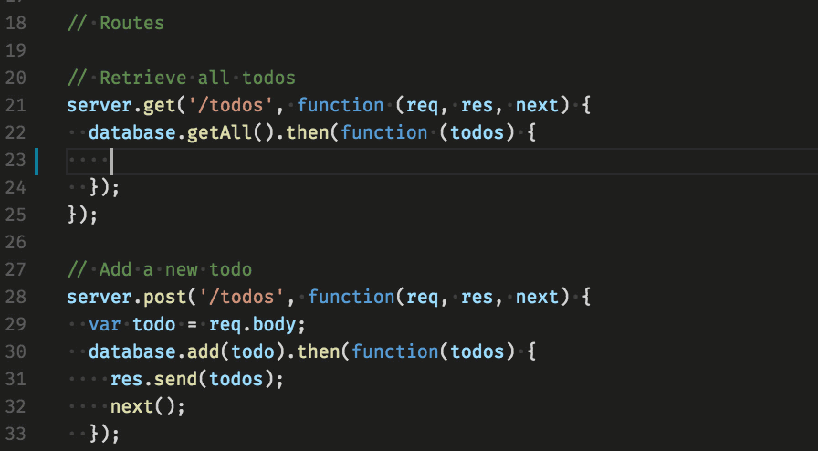
你可以查看可用方法、参数提示、简短文档等。
速览
选择一个符号，然后输入 kb(editor.action.peekDefinition)。或者，你也可以使用上下文菜单。
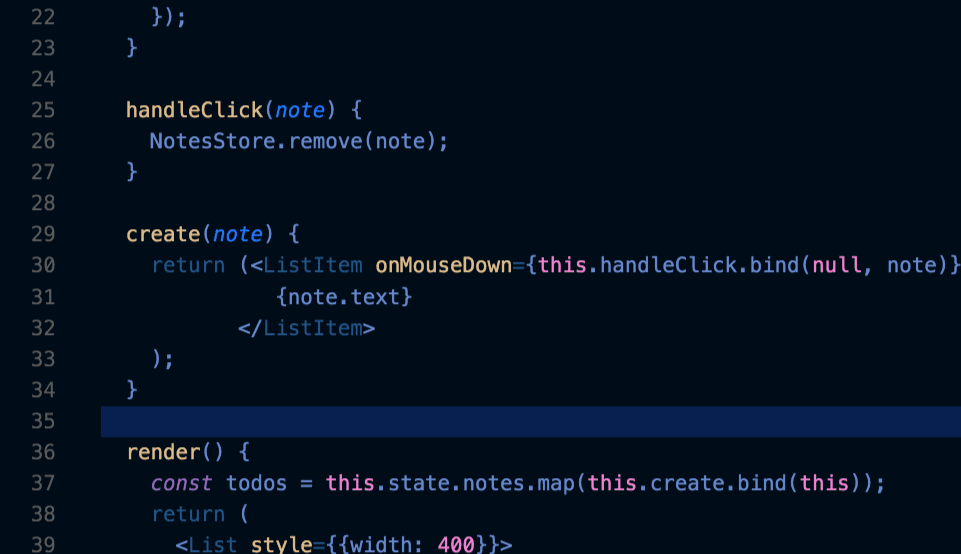
转到定义
选择一个符号，然后输入 kb(editor.action.revealDefinition)。或者，你也可以使用上下文菜单或 kbstyle(Ctrl+click)（macOS 上为 kbstyle(Cmd+click)）。
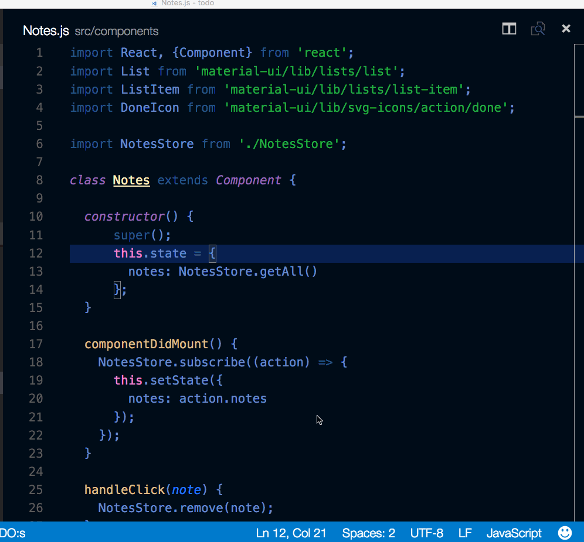
你可以使用转到 > 返回命令或 kb(workbench.action.navigateBack) 返回之前的位置。
当你悬停在类型上时，如果按住 kbstyle(Ctrl)（macOS 上为 kbstyle(Cmd)），你还可以看到类型定义。
转到引用
选择一个符号，然后输入 kb(editor.action.goToReferences)。或者，你也可以使用上下文菜单。
查找所有引用视图
选择一个符号，然后输入 kb(references-view.findReferences) 打开引用视图，在专用视图中显示所有文件符号。
重命名符号
选择一个符号，然后输入 kb(editor.action.rename)。或者，你也可以使用上下文菜单。
搜索和修改
除了搜索和替换表达式外，你还可以使用带捕获组的正则表达式来搜索和重用匹配内容的部分。在搜索框中点击使用正则表达式 .* 按钮（kb(toggleSearchRegex)）来启用正则表达式，然后编写正则表达式并使用括号定义组。然后你可以通过在替换字段中使用 $1、$2 等来重用每个组中匹配的内容。
.eslintrc.json
安装 ESLint 扩展。按你喜欢的方式配置你的 linter。有关其 linting 规则和选项的详细信息，请参阅 ESLint 规范。
以下是使用 ES6 的配置。
{
"env": {
"browser": true,
"commonjs": true,
"es6": true,
"node": true
},
"parserOptions": {
"ecmaVersion": 6,
"sourceType": "module",
"ecmaFeatures": {
"jsx": true,
"classes": true,
"defaultParams": true
}
},
"rules": {
"no-const-assign": 1,
"no-extra-semi": 0,
"semi": 0,
"no-fallthrough": 0,
"no-empty": 0,
"no-mixed-spaces-and-tabs": 0,
"no-redeclare": 0,
"no-this-before-super": 1,
"no-undef": 1,
"no-unreachable": 1,
"no-use-before-define": 0,
"constructor-super": 1,
"curly": 0,
"eqeqeq": 0,
"func-names": 0,
"valid-typeof": 1
}
}package.json
查看 package.json 文件的 IntelliSense。
Emmet 语法
代码片段
创建自定义代码片段
文件 > 首选项 > 配置代码片段，选择语言，然后创建一个代码片段。
"create component": {
"prefix": "component",
"body": [
"class $1 extends React.Component {",
"",
"\trender() {",
"\t\treturn ($2);",
"\t}",
"",
"}"
]
},在创建你自己的代码片段中查看更多详细信息。
Git 集成
键盘快捷键: kb(workbench.view.scm)
Git 集成是 VS Code 的"开箱即用"功能。你可以从 VS Code 扩展市场安装其他源代码管理 (SCM) 提供程序。本节描述 Git 集成，但大部分 UI 和操作手势与其他 SCM 提供程序是通用的。
Git 追溯
VS Code 在编辑器和状态栏中内联显示 git 追溯信息。将鼠标悬停在状态栏项或内联提示上可查看详细的 git 追溯信息。
要启用或禁用 git 追溯信息，请使用 Git: 切换 Git 追溯编辑器装饰 和 Git: 切换 Git 追溯状态栏项 命令，或配置以下设置:
setting(git.blame.statusBarItem.enabled)（默认启用）setting(git.blame.editorDecoration.enabled)
了解更多关于 VS Code 中的 git 追溯支持以及如何自定义布局。
差异
从源代码管理视图中，选择一个文件以打开差异编辑器。或者，选择右上角的打开更改按钮来对当前打开的文件进行差异比较。
视图
差异的默认视图是并排视图。
通过选择右上角的更多操作（...）按钮，然后选择内联视图来切换内联视图。
如果你希望将内联视图设为默认值，请配置 "diffEditor.renderSideBySide": false 设置。
无障碍差异查看器
使用 kb(editor.action.accessibleDiffViewer.next) 和 kb(editor.action.accessibleDiffViewer.prev) 在差异中导航。这将在一个统一的补丁格式中呈现更改。可以使用箭头键导航行，按 kbstyle(Enter) 回到差异编辑器并跳转到所选行。
编辑待处理的更改
在差异编辑器中查看更改时，你可以直接在差异编辑器的待处理更改侧进行编辑。
分支
通过状态栏轻松切换 Git 分支。
暂存
暂存文件更改
将鼠标悬停在文件数量上，选择加号按钮以暂存文件。
选择减号按钮以取消暂存更改。
暂存选定内容
你可以通过在文件中进行文本选择，然后从命令面板或从差异编辑器上下文菜单（右键单击）中选择暂存选定范围来暂存文件的一部分。
撤销上一次提交
选择（...）按钮，然后选择提交 > 撤销上一次提交来撤销上一次提交。更改将添加到已暂存的更改部分。
查看 Git 输出
VS Code 可以轻松查看实际运行的 Git 命令。当你仍在学习 Git 时或者调试困难的源代码管理问题时会很有帮助。
要查看 Git 输出，在源代码管理视图中选择（...）按钮，然后选择显示 Git 输出，使用 Git: 显示 Git 输出命令，或使用切换输出命令 (kb(workbench.action.output.toggleOutput))，然后从下拉菜单中选择 Git。
行号指示器（Gutter indicators）
编辑器在行号区提供了视觉提示，显示在哪里以及哪些更改（添加、更改或删除的行）已被做出。有关更多详细信息，请参阅源代码管理文档。
解决合并冲突
在合并期间，转到源代码管理视图（kb(workbench.view.scm)）并在差异视图中进行更改。
你可以使用内联 CodeLens 解决合并冲突，它允许你接受当前更改、接受传入更改、接受双方更改和比较更改。
在源代码管理文档中了解更多关于解决合并冲突的信息。
将 VS Code 设置为默认合并工具
git config --global merge.tool vscode
git config --global mergetool.vscode.cmd 'code --wait $MERGED'将 VS Code 设置为默认差异工具
git config --global diff.tool vscode
git config --global difftool.vscode.cmd 'code --wait --diff $LOCAL $REMOTE'将文件与剪贴板比较
键盘快捷键: kb(workbench.files.action.compareWithClipboard)
使用命令面板 (kb(workbench.action.showCommands)) 中的文件: 将活动文件与剪贴板比较命令快速将活动文件与剪贴板的内容进行比较。
调试
配置调试器
在运行和调试视图（kb(workbench.view.debug)）中，选择创建 launch.json 文件，系统会提示你选择与你的项目匹配的环境（Node.js、Python、C++ 等）。这将在你的工作区中生成一个包含调试器配置的 launch.json 文件。
Node.js 支持是内置的，其他环境需要安装适当的语言扩展。有关更多详细信息，请参阅调试文档。
断点和逐步执行
通过选择编辑器边距或使用当前行上的 kb(editor.debug.action.toggleBreakpoint) 来切换断点。编辑器边距中的断点通常显示为红色实心圆。
调试会话开始后，调试工具栏会出现在编辑器顶部，使你能够在调试时逐步执行或进入代码。在调试文档中了解更多关于调试操作的信息。
数据检查
可以在运行和调试视图的变量部分中检查变量，也可以在编辑器中悬停在它们的源代码上方，或使用调试控制台进行检查。

日志点
日志点的作用与断点类似，但不是在被命中时暂停调试器，而是将一条消息记录到控制台。日志点特别适用于在调试无法修改或暂停的生产服务器时注入日志记录。
使用左侧编辑器行号区中的添加日志点命令添加日志点，它将显示为"菱形"图标。日志消息是纯文本，但可以包含要在大括号（'{}'）中求值的表达式。
触发式断点
触发式断点是一种在另一个断点被命中后自动启用的断点。它们在诊断仅在特定前提条件之后发生的代码故障情况时非常有用。
可以通过右键单击字形边距，选择添加触发式断点，然后选择哪个其他断点来启用该断点来设置触发式断点。
任务运行器
VS Code 中的任务可以配置为运行脚本和启动进程，以便这些工具可以在 VS Code 内使用，而无需进入命令行或编写新代码。
自动检测任务
从顶级菜单中选择终端，运行配置任务命令，然后选择你要运行的任务类型。
这将生成一个包含以下内容的 tasks.json 文件。有关更多详细信息，请参阅任务文档。
{
// 参阅 https://go.microsoft.com/fwlink/?LinkId=733558
// 获取有关 tasks.json 格式的文档
"version": "2.0.0",
"tasks": [
{
"type": "npm",
"script": "install",
"group": {
"kind": "build",
"isDefault": true
}
}
]
}自动生成偶尔会出现问题。请查看文档以使其正常工作。
从终端菜单运行任务
从顶级菜单中选择终端，运行运行任务命令，然后选择你要运行的任务。通过运行终止任务命令终止正在运行的任务。
为任务定义键盘快捷键
你可以为任何任务定义键盘快捷键。从命令面板 (kb(workbench.action.showCommands)) 中，选择首选项: 打开键盘快捷键文件，将所需的快捷键绑定到 workbench.action.tasks.runTask 命令，并将任务定义为 args。
例如，要将 kbstyle(Ctrl+H) 绑定到 Run tests 任务，请添加以下内容:
{
"key": "ctrl+h",
"command": "workbench.action.tasks.runTask",
"args": "Run tests"
}从资源管理器中将 npm 脚本作为任务运行
从资源管理器视图中，你可以在编辑器中打开脚本，将其作为任务运行，并使用 node 调试器启动它（当脚本定义了类似 --inspect-brk 的调试选项时）。单击时的默认操作是打开脚本。要单击一次就运行脚本，请将 setting(npm.scriptExplorerAction) 设置为 run。使用 setting(npm.exclude) 设置排除特定文件夹中包含的 package.json 文件中的脚本。
通过 setting(npm.enableRunFromFolder) 设置，你可以启用从文件夹的资源管理器视图上下文菜单运行 npm 脚本。该设置在选中文件夹时启用在文件夹中运行 NPM 脚本...命令。该命令显示此文件夹中包含的 npm 脚本的快速选择列表，你可以选择要作为任务执行的脚本。
便携模式
VS Code 具有便携模式，可让你将设置和数据保持在与安装相同的目录中，例如放在 USB 驱动器上。
Insiders 预览版本
Visual Studio Code 团队使用 Insiders 版本来测试 VS Code 的最新功能和错误修复。你也可以在此下载来使用 Insiders 版本。
- 面向早期使用者 - Insiders 包含供用户和扩展作者试用的最新代码更改。
- 频繁构建 - 每天都有包含最新错误修复和功能的新构建。
- 并行安装 - Insiders 与稳定版并行安装，允许你独立使用其中任何一个。